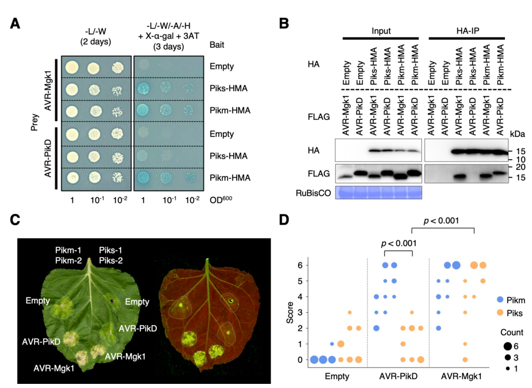

Pikm1-TS (Pikm-1) is the 1,143-residue sensor NLR encoded by the Pikm allele of the Pik blast-resistance locus on rice chromosome 11 (cultivar Tsuyuake). It is an intracellular coiled-coil nucleotide-binding leucine-rich repeat (CC-NB-LRR) immune receptor with an integrated heavy-metal-associated (HMA, RATX1) domain inserted between the N-terminal coiled coil and the NB-ARC domain. Pikm-1 works together with the adjacent, unrelated helper NLR Pikm-2: transgenic rice carrying either gene alone is susceptible, while plants carrying both resist Magnaporthe oryzae strains that deliver matching effectors. The integrated HMA domain directly binds the fungal MAX-family effectors AVR-PikD, AVR-PikE and AVR-PikA (affinity and response D > E > A, nanomolar KD for AVR-PikD), and also AVR-Mgk1, but not the escape variants AVR-PikC and AVR-PikF. Binding specificity at the HMA interface determines recognition specificity, and two HMA residues distinguish the broad Pikm recognition profile from that of the Piks allele. The HMA domain keeps the HMA fold but lacks the cysteines of the metal-binding motif and functions as an effector-binding decoy rather than as a metal-binding module. Effector binding by Pikm-1 initiates effector-triggered immunity, with cell death execution depending on the P-loop and MHD motifs of the helper Pik-2. Sensor and helper alleles are co-adapted, and mismatched pairs can be autoactive. Pikm-1 is widely used as a chassis for engineering new recognition specificities by swapping its HMA domain for other HMA domains or nanobodies.
| GO Term | Evidence | Action | Reason |
|---|---|---|---|
|
GO:0006952
defense response
|
IEA
GO_REF:0000120 |
ACCEPT |
Summary: Combined automated annotation (ARBA plus the plant disease resistance protein family IPR044974). Pikm-1 is a resistance protein required, with Pikm-2, for blast resistance.
Reason: General but correct. Pikm-1 is the effector receptor of the Pikm pair and genetic complementation shows it is required for Pikm-specific blast resistance. Treatment matches the RGA5 review, where the same InterPro mapping was accepted. The more specific process terms are captured by the MODIFY and NEW entries below.
Supporting Evidence:
PMID:18940787
Pikm-specific resistance is conferred by cooperation of Pikm1-TS and Pikm2-TS
|
|
GO:0043531
ADP binding
|
IEA
GO_REF:0000002 |
KEEP AS NON CORE |
Summary: InterPro2GO mapping from the NB-ARC domain. Pikm-1 has an NB-ARC domain with an intact P-loop (GGGKTT), so ADP binding in the resting state is plausible, but nucleotide binding has not been measured for Pikm-1.
Reason: Plausible from domain architecture, as resting NLR NB-ARC domains bind ADP. However, in the closely related Pikp allele the sensor P-loop is not essential for Pik signaling, whereas the helper Pik-2 P-loop and MHD motifs are required. Nucleotide binding is therefore not what defines the sensor function of Pikm-1. Consistent with the RGA5 review.
Supporting Evidence:
PMID:37199729
suggests that an intact P-loop in Pikp-1 is not essential for Pik-mediated signaling
PMID:37199729
This autoactivity requires an intact P-loop and MHD motif in Pikp-2
|
|
GO:0046872
metal ion binding
|
IEA
GO_REF:0000002 |
REMOVE |
Summary: InterPro2GO mapping from the HMA domain (IPR006121). The Pik-1 integrated HMA domains lack the conserved cysteines of the MxCxxC metal-binding motif. In the Pikm-1 sequence the beta1-alpha1 loop reads PMVDDKS and the whole HMA region (residues 186-264) contains no cysteine. The Pikp-HMA crystal structure contains no metal.
Reason: The domain-to-GO mapping assumes a canonical metal-binding HMA. The Pikm-1 HMA is a degenerate, effector-binding decoy, no metal binding has been shown, and the motif residues needed for it are absent. Same decision as for the RGA5 integrated HMA.
Supporting Evidence:
PMID:26304198
these Cys residues are not conserved in Pik-1 HMA domains, including Pikp-1. Hence, the Pikp-HMA structure does not contain a metal ion
file:ORYSJ/PIKM1-TS/PIKM1-TS-deep-research-falcon.md
Direct ATP-hydrolysis activity or a metal substrate for this particular full-length protein was not established by the studies reviewed.
|
|
GO:0051707
response to other organism
|
IEA
GO_REF:0000117 |
MODIFY |
Summary: ARBA transfer of a very broad response term. Pikm-1 takes part in defense against the rice blast fungus M. oryzae, as the receptor that binds its effectors.
Reason: Correct but uninformative. The documented native role of Pikm-1 is defense against a fungus: transgenic rice carrying Pikm1-TS and Pikm2-TS resists M. oryzae, and fungal strains expressing AVR-Mgk1 trigger resistance in Tsuyuake (Pikm) rice. Pikm-1 does part of the work of this defense response, since it is the receptor that perceives the fungal effectors (not only a gene whose loss gives a phenotype). GO:0050832 defense response to fungus is therefore proposed. Engineered recognition of non-fungal targets (nanobody fusions) is not native and does not justify broader terms.
Proposed replacements:
defense response to fungus
Supporting Evidence:
PMID:36656825
Furthermore, Sasa2 transformants expressing AVR-Mgk1 triggered resistance in the rice cultivar Tsuyuake (Pikm).
PMID:29988155
Rice plants expressing the Pikm allele resist infection by blast strains expressing any of three AVR-Pik effector variants
|
|
GO:0140376
innate immune receptor activity
|
IDA
PMID:29988155 Polymorphic residues in rice NLRs expand binding and respons... |
NEW |
Summary: Pikm-1 directly binds the M. oryzae effectors AVR-PikD, AVR-PikE, AVR-PikA and AVR-Mgk1 through its integrated HMA domain (Y2H, co-IP, SPR, crystal structures of the Pikm-HMA complexes), and this binding determines recognition and resistance.
Reason: This is the core molecular function of Pikm-1 and is absent from GOA. The ligand is a pathogen effector perceived directly; binding specificity matches recognition specificity across Pik and AVR-Pik alleles, and HMA residues that weaken binding weaken the response. The same term is annotated experimentally to the comparable HMA-integrated sensor RGA5. It belongs on the sensor Pikm-1, not on the helper Pikm-2.
Supporting Evidence:
PMID:29988155
Unlike Pikp, the integrated heavy metal-associated (HMA) domain of Pikm binds with high affinity to each of the three recognized effector variants, and variation at binding interfaces between effectors and Pikp-HMA or Pikm-HMA domains encodes specificity.
PMID:22805093
This binding specificity correlates with the recognition specificity between AVR and R genes.
PMID:36656825
The integrated HMA domain of Pikm-1 bound AVR-Mgk1 and AVR-PikD, whereas the HMA domain of Piks-1 bound only AVR-Mgk1
PMID:37486356
we observed strong binding of AVR-PikD to the Pikm-1 HMA (equilibrium dissociation constant [KD] = ∼10 nM)
|
|
GO:0002758
innate immune response-activating signaling pathway
|
IMP
PMID:36656825 Disentangling the complex gene interaction networks between ... |
NEW |
Summary: As the receptor that binds the effector ligand, Pikm-1 starts the effector-triggered immune signaling that, through the helper Pikm-2, leads to cell death and resistance.
Reason: Participation test: the term is defined as signals generated by a ligand binding to its receptor, and Pikm-1 is that receptor, so it performs the first step of the pathway rather than being merely required for it. Comparator check: the HMA-integrated sensor RGA5 (IDA) and Arabidopsis RPS4 carry GO:0002758; plant NLR signaling is not annotated to GO:0035872, so that term is not used. Cell death execution (plant-type hypersensitive response) is not proposed for the sensor, because it depends on the helper Pik-2 P-loop and MHD motifs.
Supporting Evidence:
PMID:18940787
Pikm-specific resistance is conferred by cooperation of Pikm1-TS and Pikm2-TS
PMID:36656825
Pik proteins Pikm, Pik*, and Pikp detect and bind AVR-Mgk1 and AVR-PikD via the Pik-1 integrated HMA domain
|
Q: In RGA5/RGA4 the sensor represses an autoactive executor, which supports a molecular function inhibitor activity annotation on RGA5. Is there evidence that Pikm-1 likewise restrains Pikm-2 in the resting state (e.g. autoactivity of Pikm-1 HMA chimeras or of the Pikp-1/Pikm-2 mismatch), or does the Pik pair act cooperatively so that no inhibitor term applies?
Q: Where does Pikm-1 act in rice cells? Localization of native or functional tagged Pikm-1 in rice has not been reported, so no cellular component can be assigned with confidence.
Q: The UniProt function text describes recognition as indirect, but the Pikm-1 HMA domain binds AVR-Pik effectors directly. Should the free-text function be corrected?
Experiment: Determine the subcellular localization of a functional, complementing Pikm-1 fusion in rice cells before and after AVR-Pik recognition.
Experiment: Cryo-EM structure of full-length Pikm-1/Pikm-2 with and without AVR-PikD to establish how effector binding to the HMA domain activates the helper and whether a resistosome-like complex forms.
The research report should be a detailed narrative explaining the function, biological processes, and localization of the gene product. Citations should be given for all claims.
You should prioritize authoritative reviews and primary scientific literature when conducting research. You can supplement
this with annotations you find in gene/protein databases, but these can be outdated or inaccurate.
We are specifically interested in the primary function of the gene - for enzymes, what reaction is catalyzed, and what is the substrate specificity? For transporters, what is the substrate? For structural proteins or adapters, what is the broader structural role? For signaling molecules, what is the role in the pathway.
We are interested in where in or outside the cell the gene product carries out its function.
We are also interested in the signaling or biochemical pathways in which the gene functions. We are less interested in broad pleiotropic effects, except where these elucidate the precise role.
Include evidence where possible. We are interested in both experimental evidence as well as inference from structure, evolution, or bioinformatic analysis. Precise studies should be prioritized over high-throughput, where available.
PIKM1-TS is the Tsuyuake allele of the rice blast-resistance sensor commonly called Pikm-1, in Oryza sativa subsp. japonica. The accession-to-name correspondence is supplied by the specified UniProt record, B5UBC1; the literature independently identifies Pikm1-TS and its adjacent partner Pikm2-TS in japonica cultivar Tsuyuake, but the papers examined do not themselves quote B5UBC1. Pikm is an allele of the chromosome-11 Pik resistance locus, not the similarly named Pigm resistance locus or the distinct Pikp and Piks alleles. Cloning and transgenic complementation established that both Pikm1-TS and Pikm2-TS are needed for Pikm-specific resistance to the rice blast fungus Magnaporthe oryzae. The founding study is Ashikawa and colleagues, Genetics, December 2008, doi:10.1534/genetics.108.095034; the accessible account of its complementation experiments is secondary. (shikari2019towardstheunderstanding pages 6-7)
Functional assignment: Pikm-1 is an intracellular, effector-binding immune sensor, not a pathogen-killing enzyme or a metal transporter. It detects particular fungal virulence proteins through an integrated heavy-metal-associated (HMA) domain and works with the Pikm-2 helper NLR to initiate effector-triggered immunity, including hypersensitive cell death and restriction of blast infection. The conventional coiled-coil (CC)–HMA–nucleotide-binding (NB-ARC)–leucine-rich-repeat (LRR) organization agrees with the NB-LRR/HMA annotations supplied for B5UBC1: the HMA lies between the N-terminal CC and NB regions, whereas the LRRs form part of the NLR receptor scaffold. “Heavy-metal-associated” describes a domain family, not an experimentally established metal-transport or metal-binding function for Pikm-1; its documented role here is effector binding. Direct ATP-hydrolysis activity or a metal substrate for this particular full-length protein was not established by the studies reviewed. (concepcion2022recognitionofrice pages 44-48, oikawa2024theblastpathogen pages 2-3)
In the native Pikm pair, the HMA domain of Pikm-1 binds AVR-Pik effector variants D, E and A, with binding and immune-response strength ranked D > E > A. The pair does not show productive recognition of AVR-PikC; subsequent work identifies AVR-PikF, like C, as escaping characterized native Pik HMA receptors. Crystallography resolved Pikm-HMA bound to D, E and A at 1.2, 1.3 and 1.3 Å, respectively, supporting a direct, allele-specific interaction. These structural measurements concern the isolated HMA complexes, not a structure of the activated full-length Pikm-1/Pikm-2 pair. De la Concepcion and colleagues, Nature Plants, July 2018, doi:10.1038/s41477-018-0194-x; Maidment and colleagues, eLife, May 2023, doi:10.7554/eLife.81123. (concepcion2018polymorphicresiduesin pages 5-7, maidment2023effectortargetguidedengineering pages 2-3)
The native recognition range is not confined to AVR-Pik. Sugihara and colleagues showed by yeast two-hybrid and in-vitro co-immunoprecipitation that Pikm-1 HMA binds AVR-Mgk1, an effector in a distinct sequence family. The Pikm-1/Pikm-2 pair responded to AVR-Mgk1 and AVR-PikD in Nicotiana benthamiana; importantly, a blast strain engineered to express AVR-Mgk1 elicited resistance in Tsuyuake rice itself. By contrast, the closely related Piks pair responded to AVR-Mgk1 but not AVR-PikD. Two sensor-HMA differences between Piks-1 and Pikm-1 affected the strength of AVR-PikD recognition, while their helper proteins have identical amino-acid sequences. Sugihara and colleagues, PLOS Biology, 19 January 2023, doi:10.1371/journal.pbio.3001945, especially Fig. 7. (sugihara2023disentanglingthecomplexa pages 9-10, sugihara2023disentanglingthecomplexa pages 13-15, sugihara2023disentanglingthecomplex media 63fec180)
The allele and engineering distinctions most relevant to functional annotation are summarized below. Only the native Pikm rows describe the B5UBC1-associated sensor’s naturally documented specificity. (concepcion2018polymorphicresiduesin pages 5-7, zdrzałek2024bioengineeringaplant pages 2-3, sugihara2023disentanglingthecomplexa pages 13-15)
| Sensor/helper | Effector(s) | Evidence / experimental system | Interpretation |
|---|---|---|---|
| Native Pikm-1 (PIKM1-TS/B5UBC1 per supplied UniProt) + Pikm-2 | AVR-PikD, AVR-PikE, AVR-PikA | Pikm-dependent cell death in Nicotiana benthamiana, supported by yeast two-hybrid, gel filtration, SPR and high-resolution Pikm-HMA complex structures; response and affinity rank D > E > A (concepcion2018polymorphicresiduesin pages 5-7) | Recognized native AVR-Pik variants; Pikm-1 HMA is the specificity-conferring sensor module. |
| Native Pikm-1 + Pikm-2 | AVR-PikC, AVR-PikF | AVR-PikC showed no significant Pikm-HMA binding or Pikm response; C and F evade all characterized native Pik-HMA receptors (concepcion2018polymorphicresiduesin pages 5-7, maidment2023effectortargetguidedengineering pages 2-3) | Not recognized by native Pikm; these are stealth variants, not substrates or ligands with demonstrated productive binding. |
| Native Pikm-1 + Pikm-2 | AVR-Mgk1 | Direct Pikm-HMA binding by yeast two-hybrid and in-vitro co-IP; Pikm responded in N. benthamiana; AVR-Mgk1-expressing M. oryzae triggered resistance in Tsuyuake rice (sugihara2023disentanglingthecomplexa pages 9-10, sugihara2023disentanglingthecomplexa pages 13-15) | Recognized second MAX-effector family member, demonstrating that native Pikm specificity extends beyond AVR-Pik. |
| Native Piks-1 + Piks-2 | AVR-PikD; AVR-Mgk1 | Piks-HMA did not bind or respond to AVR-PikD but directly bound AVR-Mgk1; Piks plants and transient assays responded to AVR-Mgk1 (sugihara2023disentanglingthecomplexa pages 9-10, sugihara2023disentanglingthecomplexa pages 13-15) | Comparator: AVR-PikD not recognized; AVR-Mgk1 recognized. |
| Native Pikp-1 + Pikp-2 | AVR-PikD; AVR-PikE/AVR-PikA | Pikp recognizes AVR-PikD but not native E or A; this narrower profile contrasts with Pikm (concepcion2018polymorphicresiduesin pages 5-7) | Comparator: D recognized; E and A not recognized by native Pikp. |
| Engineered Pikm-1^OsHIPP43 + Pikp-2 | Pwl2, Pwl2-2, Pwl2-3 | Replacing Pikm-1’s native HMA with OsHIPP43 switched specificity; all three Pwl2 variants triggered helper-dependent cell death in transient N. benthamiana assays. Pikm-2 caused effector-independent autoactivity, necessitating Pikp-2 (zdrzałek2024bioengineeringaplant pages 2-3) | Synthetic receptor, not native Pikm. Recognition has not been validated as rice field resistance; OsHIPP43–Pwl2 affinities must not be assigned to native Pikm-1. |
Table: Allele-resolved evidence distinguishes the native Pikm receptor’s AVR-Pik and AVR-Mgk1 specificity from comparator Pik alleles and an engineered OsHIPP43-domain chimera. It also separates rice resistance evidence from heterologous Nicotiana assays.
Mechanistically, effector recognition by Pikm-1 is upstream of Pikm-2-dependent defense activation. The proteins’ compatibility matters as well as ligand binding: a 2023 allele-swap study found that pairing Pikp-1 with Pikm-2 induced effector-independent cell death, whereas Pikm-1 could function with Pikp-2; a Pik-2 residue-230 substitution altered this compatibility. Accordingly, strong binding to an engineered HMA domain cannot, by itself, guarantee a usable resistance receptor—the sensor and helper must remain appropriately regulated. Bentham and colleagues, 2023, doi:10.1101/2022.10.10.511592. The detailed oligomeric structure and immediate biochemical output of an activated Pikm pair should not be assumed from structurally characterized other plant NLR resistosomes. (bentham2023alleliccompatibilityin pages 4-8, bentham2023alleliccompatibilityin pages 8-10, stone2025interactionsofblast pages 115-120)
The site of action is inside the plant cell, consistent with direct recognition by an intracellular NLR of fungus-delivered effectors; Pikm-1 is not established as a secreted receptor or a cell-surface ligand-binding protein. A preliminary, fluorescent-fusion study in heterologous N. benthamiana observed Pikm-1 signal at the cell periphery and apparently in nuclei, and Pikm-2 at the cell and nuclear peripheries. It did not verify that the peripheral signal was plasma membrane rather than adjacent cytoplasm, or demonstrate native protein localization in rice. Its author also cautioned that free fluorophore could account for apparent nuclear Pikm-1 signal. Thus a precise organelle or membrane assignment for native rice PIKM1-TS remains unconfirmed. Stone, 2025 doctoral research, localization chapter; the intracellular receptor classification is independently supported by the Pik molecular studies. (stone2025interactionsofblast pages 111-115, stone2025interactionsofblast pages 115-120, oikawa2024theblastpathogen pages 2-3)
A biological rationale for the integrated HMA ‘bait’. Oikawa and colleagues found that AVR-PikD also binds rice small HMA proteins, notably OsHIPP19 and OsHIPP20, stabilizing them and changing their distribution in heterologous plant-cell assays. Disrupting OsHIPP20 increased rice blast resistance, consistent with a host susceptibility function. This supports the interpretation that the Pik-1 integrated HMA detects an effector that also engages endogenous host proteins. These OsHIPP proteins are separate gene products, not Pikm-1 domains in isolation; the study does not show that Pikm-1 itself performs their proposed host functions. PLOS Pathogens, 18 November 2024, doi:10.1371/journal.ppat.1012647. (oikawa2024theblastpathogen pages 2-3, oikawa2024theblastpathogen pages 10-12, oikawa2024theblastpathogen pages 5-7)
Engineering demonstrates modularity, but not a new native function. A 2024 study replaced the Pikm-1 HMA with the HMA of OsHIPP43, creating Pikm-1^OsHIPP43. The purified OsHIPP43 domain, not wild-type Pikm-1, bound fungal Pwl2, Pwl2-2 and Pwl2-3 with measured dissociation constants of 191, 141 and 35 nM, respectively. The synthetic sensor elicited Pwl-dependent cell death with Pikp-2 in N. benthamiana. With Pikm-2 it instead caused effector-independent autoactivity; the reported assay does not establish blast resistance by that chimera in rice fields. Zdrzałek and colleagues, PNAS, 5 July 2024, doi:10.1073/pnas.2402872121. (zdrzałek2024bioengineeringaplant pages 2-3)
A complementary 2023 engineering study obtained rice resistance to previously escaping AVR-PikC/F strains, but its engineered sensor was Pikp-1, paired with Pikp-2—not native Pikm-1. Separately, reported Pikm-1–nanobody “Pikobody” constructs with Pikm-2 recognized fluorescent protein targets and protected N. benthamiana against fluorescent-protein-bearing potato virus X; this is a synthetic application, not evidence that natural PIKM1-TS recognizes viral proteins. Maidment and colleagues, eLife, May 2023, doi:10.7554/eLife.81123; Wang, Wang and Ning, aBIOTECH, August 2023, doi:10.1007/s42994-023-00111-x. (maidment2023effectortargetguidedengineering pages 14-16, maidment2023effectortargetguidedengineering pages 13-14, wang2023harnessingnanobodiesto pages 1-3, wang2023harnessingnanobodiesto pages 3-5)
Pikm is used as a resistance locus in marker-assisted rice breeding, which necessarily involves preserving a functional sensor–helper combination rather than treating PIKM1-TS alone as sufficient. In one study spanning four breeding backgrounds, investigators developed 31 single-gene-derived and 20 two-gene-combination lines using nine resistance genes; Pikm improved blast resistance in some, not all, backgrounds. The Tsuyuake donor itself varied between years and disease sites: under the study’s 2014–2016 natural-infection conditions its leaf-blast scores were 4.40, 2.67 and 4.08, while reported neck-blast infection was 98.85%, 100% and 100%. These are trial-specific phenotypes, not a universal efficacy estimate for B5UBC1. Jiang and colleagues, Rice, May 2019, doi:10.1186/s12284-019-0292-z. (jiang2019developmentandevaluation pages 5-6, jiang2019developmentandevaluation pages 1-2)
Conclusion. The highest-confidence annotation for PIKM1-TS/B5UBC1 is HMA-integrated intracellular sensor NLR for effector-triggered rice blast resistance, directly binding selected AVR-Pik variants and AVR-Mgk1 and requiring its paired Pikm-2 helper for resistance. Exact localization in native rice cells, a Pikm-specific activated-complex structure, and any independent catalytic or metal-handling role remain unresolved; numerical affinities measured for other HMA proteins must not be assigned to native Pikm-1. (concepcion2018polymorphicresiduesin pages 5-7, shikari2019towardstheunderstanding pages 6-7, sugihara2023disentanglingthecomplexa pages 13-15, stone2025interactionsofblast pages 111-115, oikawa2024theblastpathogen pages 2-3)
References
(shikari2019towardstheunderstanding pages 6-7): AB Shikari, A Shafi, S Najeeb, and A Sakina. Towards the understanding about distribution and architecture of r-genes underlying resistance to rice blast. Unknown journal, 2019.
(concepcion2022recognitionofrice pages 44-48): J De La Concepcion. Recognition of rice blast effectors by paired immune receptors. Unknown journal, 2022.
(oikawa2024theblastpathogen pages 2-3): Kaori Oikawa, Koki Fujisaki, Motoki Shimizu, Takumi Takeda, Keiichiro Nemoto, Hiromasa Saitoh, Akiko Hirabuchi, Yukie Hiraka, Naomi Miyaji, Aleksandra Białas, Thorsten Langner, Ronny Kellner, Tolga O Bozkurt, Stella Cesari, Thomas Kroj, Mark J Banfield, Sophien Kamoun, and Ryohei Terauchi. The blast pathogen effector avr-pik binds and stabilizes rice heavy metal-associated (hma) proteins to co-opt their function in immunity. PLOS Pathogens, Nov 2024. URL: https://doi.org/10.1371/journal.ppat.1012647, doi:10.1371/journal.ppat.1012647. This article has 75 citations and is from a highest quality peer-reviewed journal.
(concepcion2018polymorphicresiduesin pages 5-7): Juan Carlos De la Concepcion, Marina Franceschetti, Abbas Maqbool, Hiromasa Saitoh, Ryohei Terauchi, Sophien Kamoun, and Mark J. Banfield. Polymorphic residues in rice nlrs expand binding and response to effectors of the blast pathogen. Nature Plants, 4:576-585, Jul 2018. URL: https://doi.org/10.1038/s41477-018-0194-x, doi:10.1038/s41477-018-0194-x. This article has 188 citations and is from a highest quality peer-reviewed journal.
(maidment2023effectortargetguidedengineering pages 2-3): Josephine HR Maidment, Motoki Shimizu, Adam R Bentham, Sham Vera, Marina Franceschetti, Apinya Longya, Clare EM Stevenson, Juan Carlos De la Concepcion, Aleksandra Białas, Sophien Kamoun, Ryohei Terauchi, and Mark J Banfield. Effector target-guided engineering of an integrated domain expands the disease resistance profile of a rice nlr immune receptor. eLife, May 2023. URL: https://doi.org/10.7554/elife.81123, doi:10.7554/elife.81123. This article has 96 citations and is from a domain leading peer-reviewed journal.
(sugihara2023disentanglingthecomplexa pages 9-10): Yu Sugihara, Yoshiko Abe, Hiroki Takagi, Akira Abe, Motoki Shimizu, Kazue Ito, Eiko Kanzaki, Kaori Oikawa, Jiorgos Kourelis, Thorsten Langner, Joe Win, Aleksandra Białas, Daniel Lüdke, Mauricio P. Contreras, Izumi Chuma, Hiromasa Saitoh, Michie Kobayashi, Shuan Zheng, Yukio Tosa, Mark J. Banfield, Sophien Kamoun, Ryohei Terauchi, and Koki Fujisaki. Disentangling the complex gene interaction networks between rice and the blast fungus identifies a new pathogen effector. PLOS Biology, Jan 2023. URL: https://doi.org/10.1371/journal.pbio.3001945, doi:10.1371/journal.pbio.3001945. This article has 51 citations and is from a highest quality peer-reviewed journal.
(sugihara2023disentanglingthecomplexa pages 13-15): Yu Sugihara, Yoshiko Abe, Hiroki Takagi, Akira Abe, Motoki Shimizu, Kazue Ito, Eiko Kanzaki, Kaori Oikawa, Jiorgos Kourelis, Thorsten Langner, Joe Win, Aleksandra Białas, Daniel Lüdke, Mauricio P. Contreras, Izumi Chuma, Hiromasa Saitoh, Michie Kobayashi, Shuan Zheng, Yukio Tosa, Mark J. Banfield, Sophien Kamoun, Ryohei Terauchi, and Koki Fujisaki. Disentangling the complex gene interaction networks between rice and the blast fungus identifies a new pathogen effector. PLOS Biology, Jan 2023. URL: https://doi.org/10.1371/journal.pbio.3001945, doi:10.1371/journal.pbio.3001945. This article has 51 citations and is from a highest quality peer-reviewed journal.
(sugihara2023disentanglingthecomplex media 63fec180): Yu Sugihara, Yoshiko Abe, Hiroki Takagi, Akira Abe, Motoki Shimizu, Kazue Ito, Eiko Kanzaki, Kaori Oikawa, Jiorgos Kourelis, Thorsten Langner, Joe Win, Aleksandra Białas, Daniel Lüdke, Mauricio P. Contreras, Izumi Chuma, Hiromasa Saitoh, Michie Kobayashi, Shuan Zheng, Yukio Tosa, Mark J. Banfield, Sophien Kamoun, Ryohei Terauchi, and Koki Fujisaki. Disentangling the complex gene interaction networks between rice and the blast fungus identifies a new pathogen effector. PLOS Biology, Jan 2023. URL: https://doi.org/10.1371/journal.pbio.3001945, doi:10.1371/journal.pbio.3001945. This article has 51 citations and is from a highest quality peer-reviewed journal.
(zdrzałek2024bioengineeringaplant pages 2-3): Rafał Zdrzałek, Yuxuan Xi, Thorsten Langner, Adam R. Bentham, Yohann Petit-Houdenot, Juan Carlos De la Concepcion, Adeline Harant, Motoki Shimizu, Vincent Were, Nicholas J. Talbot, Ryohei Terauchi, Sophien Kamoun, and Mark J. Banfield. Bioengineering a plant nlr immune receptor with a robust binding interface toward a conserved fungal pathogen effector. Jul 2024. URL: https://doi.org/10.1073/pnas.2402872121, doi:10.1073/pnas.2402872121. This article has 68 citations and is from a highest quality peer-reviewed journal.
(bentham2023alleliccompatibilityin pages 4-8): Adam R. Bentham, Juan Carlos De la Concepcion, Javier Vega Benjumea, Sally Jones, Melanie Mendel, Jack Stubbs, Clare E. M. Stevenson, Josephine H.R. Maidment, Mark Youles, Jiorgos Kourelis, Rafał Zdrzałek, Sophien Kamoun, and Mark J. Banfield. Allelic compatibility in plant immune receptors facilitates engineering of new effector recognition specificities. BioRxiv, 35:3809-3827, Oct 2023. URL: https://doi.org/10.1101/2022.10.10.511592, doi:10.1101/2022.10.10.511592. This article has 44 citations.
(bentham2023alleliccompatibilityin pages 8-10): Adam R. Bentham, Juan Carlos De la Concepcion, Javier Vega Benjumea, Sally Jones, Melanie Mendel, Jack Stubbs, Clare E. M. Stevenson, Josephine H.R. Maidment, Mark Youles, Jiorgos Kourelis, Rafał Zdrzałek, Sophien Kamoun, and Mark J. Banfield. Allelic compatibility in plant immune receptors facilitates engineering of new effector recognition specificities. BioRxiv, 35:3809-3827, Oct 2023. URL: https://doi.org/10.1101/2022.10.10.511592, doi:10.1101/2022.10.10.511592. This article has 44 citations.
(stone2025interactionsofblast pages 115-120): CE Stone. Interactions of blast fungus effectors with small hmas and the paired rice nlr pik. Unknown journal, 2025.
(stone2025interactionsofblast pages 111-115): CE Stone. Interactions of blast fungus effectors with small hmas and the paired rice nlr pik. Unknown journal, 2025.
(oikawa2024theblastpathogen pages 10-12): Kaori Oikawa, Koki Fujisaki, Motoki Shimizu, Takumi Takeda, Keiichiro Nemoto, Hiromasa Saitoh, Akiko Hirabuchi, Yukie Hiraka, Naomi Miyaji, Aleksandra Białas, Thorsten Langner, Ronny Kellner, Tolga O Bozkurt, Stella Cesari, Thomas Kroj, Mark J Banfield, Sophien Kamoun, and Ryohei Terauchi. The blast pathogen effector avr-pik binds and stabilizes rice heavy metal-associated (hma) proteins to co-opt their function in immunity. PLOS Pathogens, Nov 2024. URL: https://doi.org/10.1371/journal.ppat.1012647, doi:10.1371/journal.ppat.1012647. This article has 75 citations and is from a highest quality peer-reviewed journal.
(oikawa2024theblastpathogen pages 5-7): Kaori Oikawa, Koki Fujisaki, Motoki Shimizu, Takumi Takeda, Keiichiro Nemoto, Hiromasa Saitoh, Akiko Hirabuchi, Yukie Hiraka, Naomi Miyaji, Aleksandra Białas, Thorsten Langner, Ronny Kellner, Tolga O Bozkurt, Stella Cesari, Thomas Kroj, Mark J Banfield, Sophien Kamoun, and Ryohei Terauchi. The blast pathogen effector avr-pik binds and stabilizes rice heavy metal-associated (hma) proteins to co-opt their function in immunity. PLOS Pathogens, Nov 2024. URL: https://doi.org/10.1371/journal.ppat.1012647, doi:10.1371/journal.ppat.1012647. This article has 75 citations and is from a highest quality peer-reviewed journal.
(maidment2023effectortargetguidedengineering pages 14-16): Josephine HR Maidment, Motoki Shimizu, Adam R Bentham, Sham Vera, Marina Franceschetti, Apinya Longya, Clare EM Stevenson, Juan Carlos De la Concepcion, Aleksandra Białas, Sophien Kamoun, Ryohei Terauchi, and Mark J Banfield. Effector target-guided engineering of an integrated domain expands the disease resistance profile of a rice nlr immune receptor. eLife, May 2023. URL: https://doi.org/10.7554/elife.81123, doi:10.7554/elife.81123. This article has 96 citations and is from a domain leading peer-reviewed journal.
(maidment2023effectortargetguidedengineering pages 13-14): Josephine HR Maidment, Motoki Shimizu, Adam R Bentham, Sham Vera, Marina Franceschetti, Apinya Longya, Clare EM Stevenson, Juan Carlos De la Concepcion, Aleksandra Białas, Sophien Kamoun, Ryohei Terauchi, and Mark J Banfield. Effector target-guided engineering of an integrated domain expands the disease resistance profile of a rice nlr immune receptor. eLife, May 2023. URL: https://doi.org/10.7554/elife.81123, doi:10.7554/elife.81123. This article has 96 citations and is from a domain leading peer-reviewed journal.
(wang2023harnessingnanobodiesto pages 1-3): Ruyi Wang, Guo-Liang Wang, and Yuese Ning. Harnessing nanobodies to expand the recognition spectrum of plant nlrs for diverse pathogens. aBIOTECH, 4:272-276, Aug 2023. URL: https://doi.org/10.1007/s42994-023-00111-x, doi:10.1007/s42994-023-00111-x. This article has 4 citations.
(wang2023harnessingnanobodiesto pages 3-5): Ruyi Wang, Guo-Liang Wang, and Yuese Ning. Harnessing nanobodies to expand the recognition spectrum of plant nlrs for diverse pathogens. aBIOTECH, 4:272-276, Aug 2023. URL: https://doi.org/10.1007/s42994-023-00111-x, doi:10.1007/s42994-023-00111-x. This article has 4 citations.
(jiang2019developmentandevaluation pages 5-6): Haichao Jiang, Zhi Li, Jia Liu, Zhikang Shen, Guanjun Gao, Qinglu Zhang, and Yuqing He. Development and evaluation of improved lines with broad-spectrum resistance to rice blast using nine resistance genes. Rice, May 2019. URL: https://doi.org/10.1186/s12284-019-0292-z, doi:10.1186/s12284-019-0292-z. This article has 71 citations and is from a peer-reviewed journal.
(jiang2019developmentandevaluation pages 1-2): Haichao Jiang, Zhi Li, Jia Liu, Zhikang Shen, Guanjun Gao, Qinglu Zhang, and Yuqing He. Development and evaluation of improved lines with broad-spectrum resistance to rice blast using nine resistance genes. Rice, May 2019. URL: https://doi.org/10.1186/s12284-019-0292-z, doi:10.1186/s12284-019-0292-z. This article has 71 citations and is from a peer-reviewed journal.

PIKM1-TS-deep-research-falcon.md (Falcon). Used as background; claims verified against cached papers where possible.id: B5UBC1
gene_symbol: PIKM1-TS
product_type: PROTEIN
status: COMPLETE
taxon:
id: NCBITaxon:39947
label: Oryza sativa subsp. japonica
description: >-
Pikm1-TS (Pikm-1) is the 1,143-residue sensor NLR encoded by the Pikm allele
of the Pik blast-resistance locus on rice chromosome 11 (cultivar Tsuyuake).
It is an intracellular coiled-coil nucleotide-binding leucine-rich repeat
(CC-NB-LRR) immune receptor with an integrated heavy-metal-associated (HMA,
RATX1) domain inserted between the N-terminal coiled coil and the NB-ARC
domain. Pikm-1 works together with the adjacent, unrelated helper NLR
Pikm-2: transgenic rice carrying either gene alone is susceptible, while
plants carrying both resist Magnaporthe oryzae strains that deliver matching
effectors. The integrated HMA domain directly binds the fungal MAX-family
effectors AVR-PikD, AVR-PikE and AVR-PikA (affinity and response D > E > A,
nanomolar KD for AVR-PikD), and also AVR-Mgk1, but not the escape variants
AVR-PikC and AVR-PikF. Binding specificity at the HMA interface determines
recognition specificity, and two HMA residues distinguish the broad Pikm
recognition profile from that of the Piks allele. The HMA domain keeps the
HMA fold but lacks the cysteines of the metal-binding motif and functions as
an effector-binding decoy rather than as a metal-binding module. Effector
binding by Pikm-1 initiates effector-triggered immunity, with cell death
execution depending on the P-loop and MHD motifs of the helper Pik-2.
Sensor and helper alleles are co-adapted, and mismatched pairs can be
autoactive. Pikm-1 is widely used as a chassis for engineering new
recognition specificities by swapping its HMA domain for other HMA domains
or nanobodies.
existing_annotations:
- term:
id: GO:0006952
label: defense response
evidence_type: IEA
original_reference_id: GO_REF:0000120
qualifier: involved_in
supporting_entities:
- ARBA:ARBA00026315
- InterPro:IPR044974
review:
summary: >-
Combined automated annotation (ARBA plus the plant disease resistance
protein family IPR044974). Pikm-1 is a resistance protein required, with
Pikm-2, for blast resistance.
action: ACCEPT
reason: >-
General but correct. Pikm-1 is the effector receptor of the Pikm pair and
genetic complementation shows it is required for Pikm-specific blast
resistance. Treatment matches the RGA5 review, where the same InterPro
mapping was accepted. The more specific process terms are captured by
the MODIFY and NEW entries below.
supported_by:
- reference_id: PMID:18940787
supporting_text: Pikm-specific resistance is conferred by cooperation of Pikm1-TS
and Pikm2-TS
- term:
id: GO:0043531
label: ADP binding
evidence_type: IEA
original_reference_id: GO_REF:0000002
qualifier: enables
supporting_entities:
- InterPro:IPR002182
review:
summary: >-
InterPro2GO mapping from the NB-ARC domain. Pikm-1 has an NB-ARC domain
with an intact P-loop (GGGKTT), so ADP binding in the resting state is
plausible, but nucleotide binding has not been measured for Pikm-1.
action: KEEP_AS_NON_CORE
reason: >-
Plausible from domain architecture, as resting NLR NB-ARC domains bind
ADP. However, in the closely related Pikp allele the sensor P-loop is
not essential for Pik signaling, whereas the helper Pik-2 P-loop and MHD
motifs are required. Nucleotide binding is therefore not what defines
the sensor function of Pikm-1. Consistent with the RGA5 review.
supported_by:
- reference_id: PMID:37199729
supporting_text: suggests that an intact P-loop in Pikp-1 is not essential for
Pik-mediated signaling
- reference_id: PMID:37199729
supporting_text: This autoactivity requires an intact P-loop and MHD motif in
Pikp-2
- term:
id: GO:0046872
label: metal ion binding
evidence_type: IEA
original_reference_id: GO_REF:0000002
qualifier: enables
supporting_entities:
- InterPro:IPR006121
review:
summary: >-
InterPro2GO mapping from the HMA domain (IPR006121). The Pik-1 integrated
HMA domains lack the conserved cysteines of the MxCxxC metal-binding
motif. In the Pikm-1 sequence the beta1-alpha1 loop reads PMVDDKS and the
whole HMA region (residues 186-264) contains no cysteine. The Pikp-HMA
crystal structure contains no metal.
action: REMOVE
reason: >-
The domain-to-GO mapping assumes a canonical metal-binding HMA. The
Pikm-1 HMA is a degenerate, effector-binding decoy, no metal binding has
been shown, and the motif residues needed for it are absent. Same
decision as for the RGA5 integrated HMA.
supported_by:
- reference_id: PMID:26304198
supporting_text: these Cys residues are not conserved in Pik-1 HMA domains,
including Pikp-1. Hence, the Pikp-HMA structure does not contain a metal
ion
- reference_id: file:ORYSJ/PIKM1-TS/PIKM1-TS-deep-research-falcon.md
supporting_text: Direct ATP-hydrolysis activity or a metal substrate for this
particular full-length protein was not established by the studies reviewed.
- term:
id: GO:0051707
label: response to other organism
evidence_type: IEA
original_reference_id: GO_REF:0000117
qualifier: involved_in
supporting_entities:
- ARBA:ARBA00029118
review:
summary: >-
ARBA transfer of a very broad response term. Pikm-1 takes part in
defense against the rice blast fungus M. oryzae, as the receptor that
binds its effectors.
action: MODIFY
reason: >-
Correct but uninformative. The documented native role of Pikm-1 is
defense against a fungus: transgenic rice carrying Pikm1-TS and Pikm2-TS
resists M. oryzae, and fungal strains expressing AVR-Mgk1 trigger
resistance in Tsuyuake (Pikm) rice. Pikm-1 does part of the work of this
defense response, since it is the receptor that perceives the fungal
effectors (not only a gene whose loss gives a phenotype). GO:0050832
defense response to fungus is therefore proposed. Engineered
recognition of non-fungal targets (nanobody fusions) is not native and
does not justify broader terms.
proposed_replacement_terms:
- id: GO:0050832
label: defense response to fungus
supported_by:
- reference_id: PMID:36656825
supporting_text: Furthermore, Sasa2 transformants expressing AVR-Mgk1 triggered
resistance in the rice cultivar Tsuyuake (Pikm).
- reference_id: PMID:29988155
supporting_text: Rice plants expressing the Pikm allele resist infection by
blast strains expressing any of three AVR-Pik effector variants
- term:
id: GO:0140376
label: innate immune receptor activity
evidence_type: IDA
original_reference_id: PMID:29988155
qualifier: enables
review:
summary: >-
Pikm-1 directly binds the M. oryzae effectors AVR-PikD, AVR-PikE,
AVR-PikA and AVR-Mgk1 through its integrated HMA domain (Y2H, co-IP,
SPR, crystal structures of the Pikm-HMA complexes), and this binding
determines recognition and resistance.
action: NEW
reason: >-
This is the core molecular function of Pikm-1 and is absent from GOA.
The ligand is a pathogen effector perceived directly; binding
specificity matches recognition specificity across Pik and AVR-Pik
alleles, and HMA residues that weaken binding weaken the response. The
same term is annotated experimentally to the comparable HMA-integrated
sensor RGA5. It belongs on the sensor Pikm-1, not on the helper Pikm-2.
additional_reference_ids:
- PMID:22805093
- PMID:36656825
- PMID:37486356
supported_by:
- reference_id: PMID:29988155
supporting_text: Unlike Pikp, the integrated heavy metal-associated (HMA) domain
of Pikm binds with high affinity to each of the three recognized effector
variants, and variation at binding interfaces between effectors and Pikp-HMA
or Pikm-HMA domains encodes specificity.
- reference_id: PMID:22805093
supporting_text: This binding specificity correlates with the recognition specificity
between AVR and R genes.
- reference_id: PMID:36656825
supporting_text: The integrated HMA domain of Pikm-1 bound AVR-Mgk1 and AVR-PikD,
whereas the HMA domain of Piks-1 bound only AVR-Mgk1
- reference_id: PMID:37486356
supporting_text: we observed strong binding of AVR-PikD to the Pikm-1 HMA (equilibrium
dissociation constant [KD] = ∼10 nM)
- term:
id: GO:0002758
label: innate immune response-activating signaling pathway
evidence_type: IMP
original_reference_id: PMID:36656825
qualifier: involved_in
review:
summary: >-
As the receptor that binds the effector ligand, Pikm-1 starts the
effector-triggered immune signaling that, through the helper Pikm-2,
leads to cell death and resistance.
action: NEW
reason: >-
Participation test: the term is defined as signals generated by a ligand
binding to its receptor, and Pikm-1 is that receptor, so it performs the
first step of the pathway rather than being merely required for it.
Comparator check: the HMA-integrated sensor RGA5 (IDA) and Arabidopsis
RPS4 carry GO:0002758; plant NLR signaling is not annotated to
GO:0035872, so that term is not used. Cell death execution
(plant-type hypersensitive response) is not proposed for the sensor,
because it depends on the helper Pik-2 P-loop and MHD motifs.
additional_reference_ids:
- PMID:18940787
supported_by:
- reference_id: PMID:18940787
supporting_text: Pikm-specific resistance is conferred by cooperation of Pikm1-TS
and Pikm2-TS
- reference_id: PMID:36656825
supporting_text: Pik proteins Pikm, Pik*, and Pikp detect and bind AVR-Mgk1 and
AVR-PikD via the Pik-1 integrated HMA domain
core_functions:
- description: >-
Intracellular sensor NLR. Its integrated HMA decoy domain, located between
the coiled coil and the NB-ARC domain, directly binds the M. oryzae MAX
effectors AVR-PikD, AVR-PikE, AVR-PikA and AVR-Mgk1. Effector binding is
the recognition event that starts effector-triggered immunity executed
with the helper NLR Pikm-2.
molecular_function:
id: GO:0140376
label: innate immune receptor activity
directly_involved_in:
- id: GO:0002758
label: innate immune response-activating signaling pathway
- id: GO:0050832
label: defense response to fungus
supported_by:
- reference_id: PMID:29988155
supporting_text: Unlike Pikp, the integrated heavy metal-associated (HMA) domain
of Pikm binds with high affinity to each of the three recognized effector variants
- reference_id: PMID:36656825
supporting_text: The integrated HMA domain of Pikm-1 bound AVR-Mgk1 and AVR-PikD,
whereas the HMA domain of Piks-1 bound only AVR-Mgk1
- reference_id: PMID:18940787
supporting_text: Pikm-specific resistance is conferred by cooperation of Pikm1-TS
and Pikm2-TS
suggested_questions:
- question: >-
In RGA5/RGA4 the sensor represses an autoactive executor, which supports a
molecular function inhibitor activity annotation on RGA5. Is there
evidence that Pikm-1 likewise restrains Pikm-2 in the resting state (e.g.
autoactivity of Pikm-1 HMA chimeras or of the Pikp-1/Pikm-2 mismatch), or
does the Pik pair act cooperatively so that no inhibitor term applies?
- question: >-
Where does Pikm-1 act in rice cells? Localization of native or functional
tagged Pikm-1 in rice has not been reported, so no cellular component can
be assigned with confidence.
- question: >-
The UniProt function text describes recognition as indirect, but the
Pikm-1 HMA domain binds AVR-Pik effectors directly. Should the free-text
function be corrected?
suggested_experiments:
- description: >-
Determine the subcellular localization of a functional, complementing
Pikm-1 fusion in rice cells before and after AVR-Pik recognition.
- description: >-
Cryo-EM structure of full-length Pikm-1/Pikm-2 with and without AVR-PikD
to establish how effector binding to the HMA domain activates the helper
and whether a resistosome-like complex forms.
references:
- id: GO_REF:0000002
title: Gene Ontology annotation through association of InterPro records with GO
terms
findings: []
- id: GO_REF:0000117
title: Electronic Gene Ontology annotations created by ARBA machine learning models
findings: []
- id: GO_REF:0000120
title: Combined Automated Annotation using Multiple IEA Methods
findings: []
- id: PMID:18940787
title: Two adjacent nucleotide-binding site-leucine-rich repeat class genes are
required to confer Pikm-specific rice blast resistance.
findings: []
- id: PMID:22805093
title: Arms race co-evolution of Magnaporthe oryzae AVR-Pik and rice Pik genes
driven by their physical interactions.
findings: []
- id: PMID:29988155
title: Polymorphic residues in rice NLRs expand binding and response to effectors
of the blast pathogen.
findings: []
- id: PMID:26304198
title: Structural basis of pathogen recognition by an integrated HMA domain in a
plant NLR immune receptor.
findings: []
- id: PMID:36656825
title: Disentangling the complex gene interaction networks between rice and the
blast fungus identifies a new pathogen effector.
findings: []
- id: PMID:37199729
title: Effector target-guided engineering of an integrated domain expands the disease
resistance profile of a rice NLR immune receptor.
findings: []
- id: PMID:38968126
title: Bioengineering a plant NLR immune receptor with a robust binding interface
toward a conserved fungal pathogen effector.
findings: []
- id: PMID:37486356
title: Allelic compatibility in plant immune receptors facilitates engineering of
new effector recognition specificities.
findings: []
- id: file:ORYSJ/PIKM1-TS/PIKM1-TS-deep-research-falcon.md
title: Falcon (Edison Scientific) deep research report for PIKM1-TS
findings: []